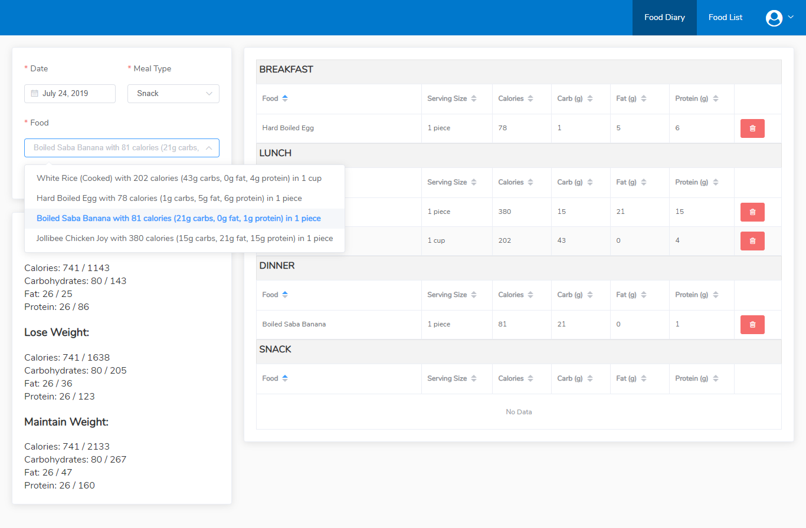

My Food Diary is a personal project I recently did over one weekend to aid my own weight-loss journey. Tracking a person's daily calorie intake is a proven way for a successful weight loss program. In order to lose weight, a person has to create a calorie deficit. By keeping a food diary, a person trying to lose weight will be able to stay within their allowed daily calorie limit. Calorie limit is determined by a person's Basal Metabolic Rate (BMR). To put it simply, BMR is the number of calories you can consume everyday in order to maintain your current weight. You lose weight by consuming calories significantly lower than your BMR.
I used to keep track of my daily calorie intake by manually writing down the foods I consume throughout the day on my phone. After that I have to remember how much calorie each food contains and compute the total to make sure I am not over my daily limit. It can be really hard and confusing specially if you have to do it every.single.day.
I tried many different apps available on the internet but most of them, like MyFitnessPal and Noom, are not free. Others that offer free services are usually filled with hundreds of ads which are very annoying.
That's when I decided to develop My Food Diary.
My Food Diary is as simple as it can get. I didn't want to fill it with unnecessary functionalities that will only make it confusing to use. Basically, it does 3 things:
1. Allow people to register and input their age, gender, height, weight, and activity level and the app will automatically compute their BMR and give their suggested daily calorie, carbohydrates, fat, and protein limit in order to maintain weight, lose weight, or lose weight fast.
2. Allow users to add the usual foods they eat and how much calorie, carbohydrates, fat, and protein it contains so that they wouldn't have to remember it manually. (Update: I already sent a request to MyFitnessPal if they could give me API access to pull contents from their food database. If my request is granted, there will be no need to manually add food names and their calorie count as it will be pulled automatically via MFP API.)
3. Allow users to record what food they eat for breakfast, lunch, dinner, or snack and the app will automatically compute how much calorie, carbohydrates, fat, and protein they have already consumed for the day.
Users can also view their food intake history by simply choosing their desired date. (see image above)
As I said, this is an over-the-weekend project. I know this is far from perfect and may lack the capabilities that other applications of its kind has.
But for me, it gets the job done.
Below are some of the functionalities that I plan to include in future releases:
- Quantity of foods
- Standard serving sizes
- Generate & print Daily, weekly, monthly, and yearly reports
- Automatically add food items and their calorie count via MFP API.
This project is available on Github.